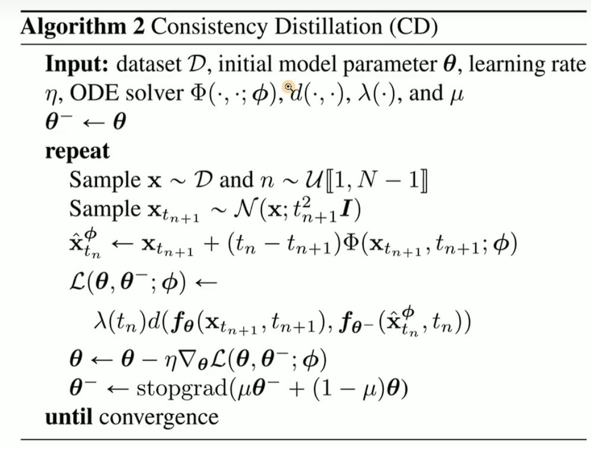
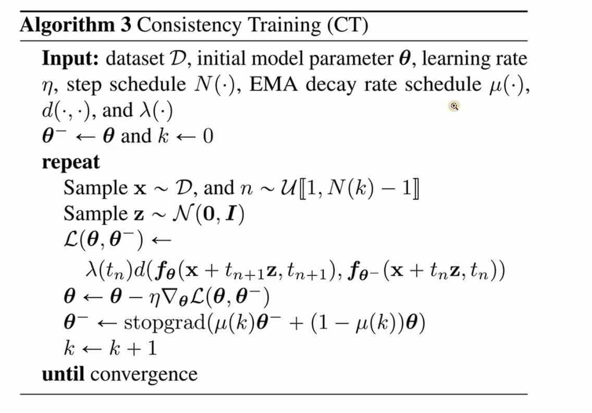

week1
一致性模型（Consistency Models，CM）
https://zhuanlan.zhihu.com/p/623402026
一致性模型（Consistency Models，CM）主要解决扩散生成模型迭代采样过程缓慢的问题，支持一步采样快速生成和多步采样高精度生成，CM 的本质就是将任何时间步的点映射到轨迹的起点。CM 的一个关键的性质是 self-consistency 性：相同轨迹上的点映射到相同的初始点。
SDE与ODE
前向过程满足的SDE：
$\mathrm{d}\mathbf{x}=\mathbf{f}(\mathbf{x},t)\mathrm{d}t+g(t)\mathrm{d}\mathbf{w}(t) $
f:漂移因子 g:扩散因子 w:维纳过程(标准布朗运动) score:$\nabla_x\log p(x)$ 即概率密度对数的梯度
朗之万动力学
边缘概率密度
score matching
逆向过程的SDE为：
$\mathrm{d}\mathbf{x}=[\mathbf{f}(\mathbf{x},t)-g^2(t)\nabla_\mathbf{x}\log p_t(\mathbf{x})]\mathrm{d}t+g(t)\mathrm{d}\bar \ {\mathbf{w}}(t)$
ODE：SDE去掉维纳过程，变成一个常微分方程
$\mathrm{d}\mathbf{x}_t=
\begin{bmatrix}
f(\mathbf{x}_t,t)-\frac{1}{2}g^2(t)\nabla\log p_t(\mathbf{x}_t)
\end{bmatrix}\mathrm{d}t$
如何用神经网络训练一致性模型
一致性函数
$f(\mathbf{x}t,t)=
\begin{cases}
\mathbf{x}\varepsilon, & t=\varepsilon \
f(\mathbf{x}_{t^{\prime}},t^{\prime}), & t\in(\varepsilon,T],\forall t^{\prime}\in[\varepsilon,T] &
\end{cases}$
一致性模型：即用神经网络模拟一致性函数的特性
给定任意神经网络F,
$f_\theta(\mathbf{x}t,t)=C{\mathrm{skip}}(t)\mathbf{x}t+C{\mathrm{out}}(t)F_\theta(\mathbf{x}_t,t)$ 随t变化时C的变化
EDM–$C_{in}$
损失函数——相邻两个时间输出值差距最小化$\mathcal{L}^N(\theta)=\mathbb{E}[|f_\theta(\mathbf{x}{t{n+1}},t_{n+1})-f_\theta(\hat{\mathbf{x}}{t_n},t_n)|2^2]$ 再经过EMA,最终$\mathcal{L}^N(\theta,\theta^-)=\mathbb{E}[|f\theta(\mathbf{x}{t_{n+1}},t_{n+1})-f_{\theta^-}(\hat{\mathbf{x}}_{t_n},t_n)|_2^2]$
一致性蒸馏（简称CD，Consistency Distillation）——从已经学好的score function蒸馏

已经有了score function $\mathbf{s}_{\phi}(\mathbf{x}(t),t)$
一致性训练(简称CT，Consistency Training)——从数据中直接学

用$\nabla\log p_t(\mathbf{x}_t)=-\mathbb{E}\left[\frac{\mathbf{x}_t-\mathbf{x}}{t^2}|\mathbf{x}_t\right]$来代替一致性蒸馏中的已有的sore fuction
如何通过一致性模型采样获得图像
一步采样
给定一个$x_t$，带入一致性模型
多步采样
可提升图像质量
SR3
SR3 is an approach to image super resolution via iterative refinement
通过迭代优化实现生成图像超分辨率
key words
- iterative refinement
- both faces and natural images
- bicubic interpolation
- flexibility inchoosing number of diffusion steps, and the noise schedule during inference
- FID
- rather than estimating the posterior mean, SR3 generates samples from the target posterior.
- constant number of refinement steps (often no more than 100).
- onot requireanyauxiliaryobjective function inorder toensureconsistencywith the low resolutioninputs
- our diffusion models do not provide a knob to control sample quality vs. sample diversity（如何平衡样本质量与样本多样性吗？）, and finding ways to do so isinteresting
avenue for future research.
涉及知识点
- score matching
- Langevin dynamics
- PSNR and SSIM
- residual blocks
- 级联结构
- Normalizing flows
- anti-aliasing
- ImageNet
- Dropout
总结
- 将LR作为条件输入
- 不在取离散的t，而是将同样范围内连续t的采样值（即noise）输入
或许可以减小推理步数，加快速度？ - 级联 分阶段生成：
第一阶段：使用无条件生成模型（如DDPM）生成低分辨率图像（如64×64）。
第二阶段：将低分辨率图像输入第一个SR3模型，进行4倍上采样（64→256）。
第三阶段：将256×256图像输入第二个SR3模型，再次4倍上采样至1024×1024。
问题
- 下采样操作，将 HR 图像的尺⼨减半，⽣成对应的 LR 图像
下采样方式如何选择（是否采用SR3论文中提到的双三次插值？），以及为什么规定LR为HR尺寸减半后的结果 - SR3采用的是迭代优化实现图像超分辨率重建的方法，是否面临计算和时间成本高的问题，如何解决是否可以参考连续一致性模型的做法
- 连续一致性模型有单步采样和多部采样两种方式，多部采样可以理解为牺牲速度换取高质量？是否可以再次基础上实现超分辨率重建？
- 尝试https://github.com/openai/consistency_models
和https://github.com/Janspiry/Image-Super-Resolution-via-Iterative-Refinement 时遇到困难 - 对数学公式的推导要掌握到什么程度？